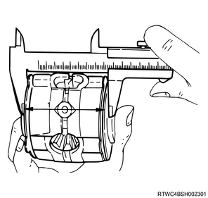

Limited slip differential reassembly (All models)
1. Differential cage assembly adjustment
1. Measure the differential cage using a vernier caliper.
Note
- Measure the depth of the differential cage.
Standard： 80.58 mm { 3.172 in } A - B in the diagram
Standard： 10.58 mm { 0.417 in } C in the diagram
2. Measure the pressure ring using a vernier caliper.
Note
- Measure the full length of the pressure ring, friction disc and plate.
- Assemble the pinion shaft with pressure plate and then assemble the friction disc and plate.
- Measure the length between the plates on both ends of the V-groove.

- Length between the plates on both ends of the V-groove
3. Adjust the clearance.
Note
- Adjust the clearance between the friction disc and friction plate.
- After you measure the dimensions of A, B, C and D, make adjustment in accordance with the procedure below.
- Measure the spring plate.
Standard： 1.75 mm { 0.069 in } ×4 pcs., E
Note
- Measure the thickness of the plate spring.
Standard： 1.75 mm { 0.069 in } ×2 pcs., F
Note
- Select friction discs and plates to achieve the following dimensions.
(A - B + C) - (D + E) = 0.06 to 0.20 mm {0.002 to 0.008 in} - The difference between the total dimensions of the right and left friction discs, friction plates, and spring plates must not be larger than 0.05 mm {0.002 in}.
| Friction disc and plate thickness |
| ： 1.65 mm { 0.065 in } |
| ： 1.75 mm { 0.069 in } |
| ： 1.85 mm { 0.073 in } |
4. Adjust the backlash.
Note
- Adjust the backlash of side gear in axial direction.
- Measure the depth of the differential cage.
Standard： 82.03 mm { 3.230 in } F - B in the diagram
Standard： 12.03 mm { 0.474 in } G in the diagram
Note
- Assemble the side gear, pinion, pinion shaft, pressure ring and thrust washer.
- Press the pressure ring in the axial direction against the pinion shaft to eliminate the clearance.
- Install the side gear to the pinion to eliminate the backlash.
- Measure the dimension between the thrust washers at both ends.
- Dimension between the thrust washers at both ends
Note
- After measuring of the dimension between the thrust washers at both ends, make an adjustment to achieve the following dimensions.
((F - B) + G - H) = 0.05 to 0.2 mm {0.002 to 0.008 in} - Select an appropriate thrust washer so that the dimensional difference between the pressure ring backside and the thrust washers on both sides does not exceed the specified value.
Standard： 0.05 mm { 0.002 in } Left and right side
| Thrust washer thickness |
| ： 1.5 mm { 0.059 in } |
| ： 1.6 mm { 0.063 in } |
| ： 1.7 mm { 0.067 in } |
2. Differential cage assembly reassembly
Caution
- When assembling each part, apply the recommended gear oil to the friction sliding surfaces.
Note
- Recommended oil: GL5LSD or equivalent
1. Install the thrust washer to the differential cage.
Note
- Install the thrust washer to the differential cage B.
2. Install the spring plate to the differential cage.
Note
- Install to differential cage B in the order of [2 spring plates] ->[friction plate] ->[friction disc] ->[friction plate] ->[friction disc].
- As shown in the diagram below, the spring plate is installed with the inside facing the differential cage side.
- Friction plate
- Spring plate
- Friction disc
3. Install the pressure ring to the differential cage.
Note
- Install the pressure ring to the differential cage B.
4. Install the side gear to the differential cage.
Note
- Install the side gear to the differential cage B.
- Assemble the pinion and the pinion shaft to differential cage B.
5. Install the pressure ring to the differential cage.
Note
- Install the pressure ring to the differential cage B.
6. Install the spring plate to the differential cage.
Note
- Install to differential cage B in the order of [friction disc] ->[friction plate] ->[friction disc] ->[friction plate] ->[2 spring plates].
7. Install the thrust washer to the differential cage.
8. Assemble the differential cage.
Note
- Assemble differential cages A and B.
- Align the alignment marks and evenly tighten screws in a diagonal order.
9. Check the starting torque of the side gear.
Note
- Measure the starting torque of the side gear using a special tool.

SST: 5-8840-2682-0 - side gear holder
Starting torque： 29 to 45 N・m { 3.0 to 4.6 kgf・m / 21 to 33 lb・ft }
- Side gear holder